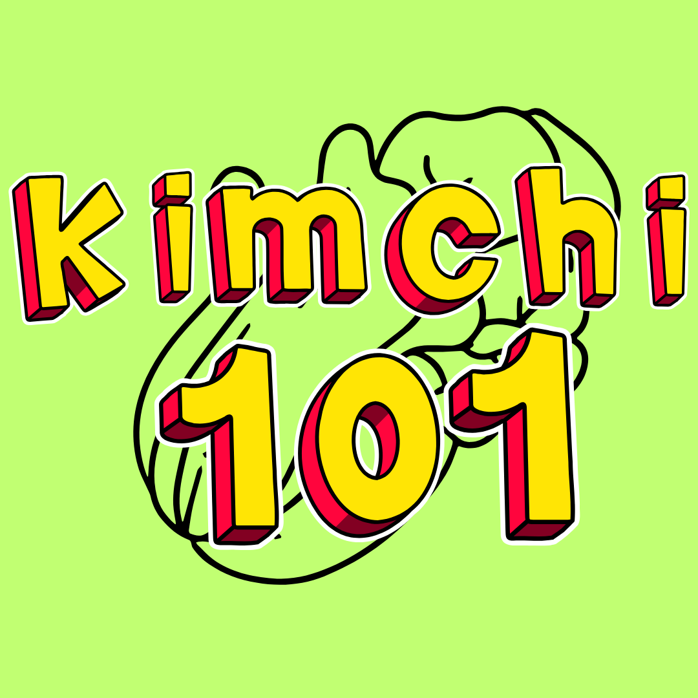

A Night for Hope
28 JAN, 8.30 pm - 11.30 pm
DTC, MMU CYBERJAYA
Charity dinner for those in need
DTC, MMU CYBERJAYA
Charity dinner for those in need

Kimchi 101
13 FEB, 4.30 pm - 6.30 pm
FOM Atrium, MMU CYBERJAYA
Learn how to make kimchi with a professional chef
FOM Atrium, MMU CYBERJAYA
Learn how to make kimchi with a professional chef
Introductory to Hangul
21 FEB, 8.30 pm - 10.30 pm
CNMX 1005, MMU CYBERJAYA
Take your first steps in learning Korean
CNMX 1005, MMU CYBERJAYA
Take your first steps in learning Korean